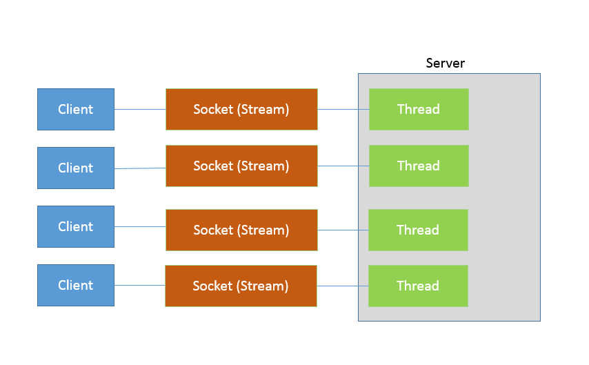

第11讲 | Java提供了哪些IO方式？ NIO如何实现多路复用？
IO 一直是软件开发中的核心部分之一，伴随着海量数据增长和分布式系统的发展，IO 扩展能力愈发重要。幸运的是，Java 平台 IO 机制经过不断完善，虽然在某些方面仍有不足，但已经在实践中证明了其构建高扩展性应用的能力。
今天我要问你的问题是，Java 提供了哪些 IO 方式？ NIO 如何实现多路复用？
典型回答
Java IO 方式有很多种，基于不同的 IO 抽象模型和交互方式，可以进行简单区分。
首先，传统的 java.io 包，它基于流模型实现，提供了我们最熟知的一些 IO 功能，比如 File 抽象、输入输出流等。交互方式是同步、阻塞的方式，也就是说，在读取输入流或者写入输出流时，在读、写动作完成之前，线程会一直阻塞在那里，它们之间的调用是可靠的线性顺序。
java.io 包的好处是代码比较简单、直观，缺点则是 IO 效率和扩展性存在局限性，容易成为应用性能的瓶颈。
很多时候，人们也把 java.net 下面提供的部分网络 API，比如 Socket、ServerSocket、HttpURLConnection 也归类到同步阻塞 IO 类库，因为网络通信同样是 IO 行为。
第二，在 Java 1.4 中引入了 NIO 框架（java.nio 包），提供了 Channel、Selector、Buffer 等新的抽象，可以构建多路复用的、同步非阻塞 IO 程序，同时提供了更接近操作系统底层的高性能数据操作方式。
第三，在 Java 7 中，NIO 有了进一步的改进，也就是 NIO 2，引入了异步非阻塞 IO 方式，也有很多人叫它 AIO（Asynchronous IO）。异步 IO 操作基于事件和回调机制，可以简单理解为，应用操作直接返回，而不会阻塞在那里，当后台处理完成，操作系统会通知相应线程进行后续工作。
考点分析
我上面列出的回答是基于一种常见分类方式，即所谓的 BIO、NIO、NIO 2（AIO）。
在实际面试中，从传统 IO 到 NIO、NIO 2，其中有很多地方可以扩展开来，考察点涉及方方面面，比如：
- 基础 API 功能与设计， InputStream/OutputStream 和 Reader/Writer 的关系和区别。
- NIO、NIO 2 的基本组成。
- 给定场景，分别用不同模型实现，分析 BIO、NIO 等模式的设计和实现原理。
- NIO 提供的高性能数据操作方式是基于什么原理，如何使用？
- 或者，从开发者的角度来看，你觉得 NIO 自身实现存在哪些问题？有什么改进的想法吗？
IO 的内容比较多，专栏一讲很难能够说清楚。IO 不仅仅是多路复用，NIO 2 也不仅仅是异步 IO，尤其是数据操作部分，会在专栏下一讲详细分析。
知识扩展
首先，需要澄清一些基本概念：
- 区分同步或异步（synchronous/asynchronous）。简单来说，同步是一种可靠的有序运行机制，当我们进行同步操作时，后续的任务是等待当前调用返回，才会进行下一步；而异步则相反，其他任务不需要等待当前调用返回，通常依靠事件、回调等机制来实现任务间次序关系。
- 区分阻塞与非阻塞（blocking/non-blocking）。在进行阻塞操作时，当前线程会处于阻塞状态，无法从事其他任务，只有当条件就绪才能继续，比如 ServerSocket 新连接建立完毕，或数据读取、写入操作完成；而非阻塞则是不管 IO 操作是否结束，直接返回，相应操作在后台继续处理。
不能一概而论认为同步或阻塞就是低效，具体还要看应用和系统特征。
对于 java.io，我们都非常熟悉，我这里就从总体上进行一下总结，如果需要学习更加具体的操作，你可以通过教程等途径完成。总体上，我认为你至少需要理解：
- IO 不仅仅是对文件的操作，网络编程中，比如 Socket 通信，都是典型的 IO 操作目标。
- 输入流、输出流（InputStream/OutputStream）是用于读取或写入字节的，例如操作图片文件。
- 而 Reader/Writer 则是用于操作字符，增加了字符编解码等功能，适用于类似从文件中读取或者写入文本信息。本质上计算机操作的都是字节，不管是网络通信还是文件读取，Reader/Writer 相当于构建了应用逻辑和原始数据之间的桥梁。
- BufferedOutputStream 等带缓冲区的实现，可以避免频繁的磁盘读写，进而提高 IO 处理效率。这种设计利用了缓冲区，将批量数据进行一次操作，但在使用中千万别忘了 flush。
- 参考下面这张类图，很多 IO 工具类都实现了 Closeable 接口，因为需要进行资源的释放。比如，打开 FileInputStream，它就会获取相应的文件描述符（FileDescriptor），需要利用 try-with-resources、 try-finally 等机制保证 FileInputStream 被明确关闭，进而相应文件描述符也会失效，否则将导致资源无法被释放。利用专栏前面的内容提到的 Cleaner 或 finalize 机制作为资源释放的最后把关，也是必要的。
下面是我整理的一个简化版的类图，阐述了日常开发应用较多的类型和结构关系。

1.Java NIO 概览
首先，熟悉一下 NIO 的主要组成部分：
Buffer，高效的数据容器，除了布尔类型，所有原始数据类型都有相应的 Buffer 实现。
Channel，类似在 Linux 之类操作系统上看到的文件描述符，是 NIO 中被用来支持批量式 IO 操作的一种抽象。
File 或者 Socket，通常被认为是比较高层次的抽象，而 Channel 则是更加操作系统底层的一种抽象，这也使得 NIO 得以充分利用现代操作系统底层机制，获得特定场景的性能优化，例如，DMA（Direct Memory Access）等。不同层次的抽象是相互关联的，我们可以通过 Socket 获取 Channel，反之亦然。
Selector，是 NIO 实现多路复用的基础，它提供了一种高效的机制，可以检测到注册在 Selector 上的多个 Channel 中，是否有 Channel 处于就绪状态，进而实现了单线程对多 Channel 的高效管理。
Selector 同样是基于底层操作系统机制，不同模式、不同版本都存在区别，例如，在最新的代码库里，相关实现如下：
Linux 上依赖于 epoll（http://hg.openjdk.java.net/jdk/jdk/file/d8327f838b88/src/java.base/linux/classes/sun/nio/ch/EPollSelectorImpl.java）。
Windows 上 NIO2（AIO）模式则是依赖于 iocp（http://hg.openjdk.java.net/jdk/jdk/file/d8327f838b88/src/java.base/windows/classes/sun/nio/ch/Iocp.java）。
- Chartset，提供 Unicode 字符串定义，NIO 也提供了相应的编解码器等，例如，通过下面的方式进行字符串到 ByteBuffer 的转换：
Charset.defaultCharset().encode("Hello world!"));
2.NIO 能解决什么问题？
下面我通过一个典型场景，来分析为什么需要 NIO，为什么需要多路复用。设想，我们需要实现一个服务器应用，只简单要求能够同时服务多个客户端请求即可。
使用 java.io 和 java.net 中的同步、阻塞式 API，可以简单实现。
public class DemoServer extends Thread {
private ServerSocket serverSocket;
public int getPort() {
return serverSocket.getLocalPort();
}
public void run() {
try {
serverSocket = new ServerSocket(0);
while (true) {
Socket socket = serverSocket.accept();
RequestHandler requestHandler = new RequestHandler(socket);
requestHandler.start();
}
} catch (IOException e) {
e.printStackTrace();
} finally {
if (serverSocket != null) {
try {
serverSocket.close();
} catch (IOException e) {
e.printStackTrace();
}
;
}
}
}
public static void main(String[] args) throws IOException {
DemoServer server = new DemoServer();
server.start();
try (Socket client = new Socket(InetAddress.getLocalHost(), server.getPort())) {
BufferedReader bufferedReader = new BufferedReader(new InputStreamReader(client.getInputStream()));
bufferedReader.lines().forEach(s -> System.out.println(s));
}
}
}
// 简化实现，不做读取，直接发送字符串
class RequestHandler extends Thread {
private Socket socket;
RequestHandler(Socket socket) {
this.socket = socket;
}
@Override
public void run() {
try (PrintWriter out = new PrintWriter(socket.getOutputStream());) {
out.println("Hello world!");
out.flush();
} catch (Exception e) {
e.printStackTrace();
}
}
}
其实现要点是：
- 服务器端启动 ServerSocket，端口 0 表示自动绑定一个空闲端口。
- 调用 accept 方法，阻塞等待客户端连接。
- 利用 Socket 模拟了一个简单的客户端，只进行连接、读取、打印。
- 当连接建立后，启动一个单独线程负责回复客户端请求。
这样，一个简单的 Socket 服务器就被实现出来了。
思考一下，这个解决方案在扩展性方面，可能存在什么潜在问题呢？
大家知道 Java 语言目前的线程实现是比较重量级的，启动或者销毁一个线程是有明显开销的，每个线程都有单独的线程栈等结构，需要占用非常明显的内存，所以，每一个 Client 启动一个线程似乎都有些浪费。
那么，稍微修正一下这个问题，我们引入线程池机制来避免浪费。
serverSocket = new ServerSocket(0);
executor = Executors.newFixedThreadPool(8);
while (true) {
Socket socket = serverSocket.accept();
RequestHandler requestHandler = new RequestHandler(socket);
executor.execute(requestHandler);
}
这样做似乎好了很多，通过一个固定大小的线程池，来负责管理工作线程，避免频繁创建、销毁线程的开销，这是我们构建并发服务的典型方式。这种工作方式，可以参考下图来理解。

如果连接数并不是非常多，只有最多几百个连接的普通应用，这种模式往往可以工作的很好。但是，如果连接数量急剧上升，这种实现方式就无法很好地工作了，因为线程上下文切换开销会在高并发时变得很明显，这是同步阻塞方式的低扩展性劣势。
NIO 引入的多路复用机制，提供了另外一种思路，请参考我下面提供的新的版本。
public class NIOServer extends Thread {
public void run() {
try (Selector selector = Selector.open();
ServerSocketChannel serverSocket = ServerSocketChannel.open();) {// 创建 Selector 和 Channel
serverSocket.bind(new InetSocketAddress(InetAddress.getLocalHost(), 8888));
serverSocket.configureBlocking(false);
// 注册到 Selector，并说明关注点
serverSocket.register(selector, SelectionKey.OP_ACCEPT);
while (true) {
selector.select();// 阻塞等待就绪的 Channel，这是关键点之一
Set<SelectionKey> selectedKeys = selector.selectedKeys();
Iterator<SelectionKey> iter = selectedKeys.iterator();
while (iter.hasNext()) {
SelectionKey key = iter.next();
// 生产系统中一般会额外进行就绪状态检查
sayHelloWorld((ServerSocketChannel) key.channel());
iter.remove();
}
}
} catch (IOException e) {
e.printStackTrace();
}
}
private void sayHelloWorld(ServerSocketChannel server) throws IOException {
try (SocketChannel client = server.accept();) { client.write(Charset.defaultCharset().encode("Hello world!"));
}
}
// 省略了与前面类似的 main
}
这个非常精简的样例掀开了 NIO 多路复用的面纱，我们可以分析下主要步骤和元素：
首先，通过 Selector.open() 创建一个 Selector，作为类似调度员的角色。
然后，创建一个 ServerSocketChannel，并且向 Selector 注册，通过指定 SelectionKey.OP_ACCEPT，告诉调度员，它关注的是新的连接请求。
注意，为什么我们要明确配置非阻塞模式呢？这是因为阻塞模式下，注册操作是不允许的，会抛出 IllegalBlockingModeException 异常。
Selector 阻塞在 select 操作，当有 Channel 发生接入请求，就会被唤醒。
在 sayHelloWorld 方法中，通过 SocketChannel 和 Buffer 进行数据操作，在本例中是发送了一段字符串。
可以看到，在前面两个样例中，IO 都是同步阻塞模式，所以需要多线程以实现多任务处理。而 NIO 则是利用了单线程轮询事件的机制，通过高效地定位就绪的 Channel，来决定做什么，仅仅 select 阶段是阻塞的，可以有效避免大量客户端连接时，频繁线程切换带来的问题，应用的扩展能力有了非常大的提高。下面这张图对这种实现思路进行了形象地说明。

在 Java 7 引入的 NIO 2 中，又增添了一种额外的异步 IO 模式，利用事件和回调，处理 Accept、Read 等操作。 AIO 实现看起来是类似这样子：
AsynchronousServerSocketChannel serverSock = AsynchronousServerSocketChannel.open().bind(sockAddr);
serverSock.accept(serverSock, new CompletionHandler<>() { // 为异步操作指定 CompletionHandler 回调函数
@Override
public void completed(AsynchronousSocketChannel sockChannel, AsynchronousServerSocketChannel serverSock) {
serverSock.accept(serverSock, this);
// 另外一个 write（sock，CompletionHandler{}）
sayHelloWorld(sockChannel, Charset.defaultCharset().encode
("Hello World!"));
}
// 省略其他路径处理方法...
});
鉴于其编程要素（如 Future、CompletionHandler 等），我们还没有进行准备工作，为避免理解困难，我会在专栏后面相关概念补充后的再进行介绍，尤其是 Reactor、Proactor 模式等方面将在 Netty 主题一起分析，这里我先进行概念性的对比：
- 基本抽象很相似，AsynchronousServerSocketChannel 对应于上面例子中的 ServerSocketChannel；AsynchronousSocketChannel 则对应 SocketChannel。
- 业务逻辑的关键在于，通过指定 CompletionHandler 回调接口，在 accept/read/write 等关键节点，通过事件机制调用，这是非常不同的一种编程思路。
今天我初步对 Java 提供的 IO 机制进行了介绍，概要地分析了传统同步 IO 和 NIO 的主要组成，并根据典型场景，通过不同的 IO 模式进行了实现与拆解。专栏下一讲，我还将继续分析 Java IO 的主题。
一课一练
关于今天我们讨论的题目你做到心中有数了吗？留一道思考题给你，NIO 多路复用的局限性是什么呢？你遇到过相关的问题吗？